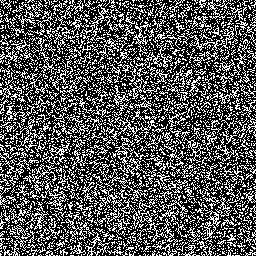
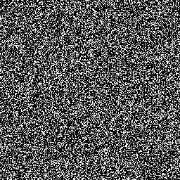

![[Quick
Start]](qs.gif) |
![[User's
Guide]](us.gif) |
![[Reference
Manual]](ref.gif) |
![[Quick
Reference]](qr.gif) |
![[Next:
Test Suite]](next.gif) |
Test Results
Serial Test
The serial test measures correlation between adjacent elements in a random number sequence. We multiply the double precision random numbers by d and truncate to get an integer in [0,d). We consider n subsequences of 2 random numbers each. There are d2 possible subsequences, and each should be equally likely if the distribution were truly uniform. If we interleave two streams with adjacent elements of the sequence coming from the same stream, then again, each subsequence will be equally likely if the individual streams are uniform and the corresponding elements of each stream are uncorrelated. The Chisquare test can then be applied to these sequences to determine the likelihood of the sequence coming from a uniform distribution.We tested a set of 100 streams individually, without interleaving. We considered 105 pairs of adjacent random integers in [0,100). We then interleaved 100 pairs of these streams and performed this test again. In both the cases, acceptable values of the Chisquare distribution were obtained. We plan to conduct larger tests later.
We illustrate the results of the test qualitatively below. We consider a million random integers in [0,256) from two streams. Then we form pairs from corresponding elements of each stream. There are 2562 such possible values for these pairs. We determine the frequencies of each possible pair. We then subtract the expected frequency and scale the result to a value in [0,256). In the plot below, these scaled values are treated as the pixel intensities. The horizontal axis represents the values from the first stream and the vertical axis those from the second stream.
  48 bit Linear Congruential Generator with prime addend Modified Lagged Fibonacci Generator If any patterns could be observed in the figures above, then this would indicate correlations between corresponding elements of the two streams.
Overview of Empirical Test Results
The numbers in the table are the total number of random numbers tested.
Sequential Parallel Test 48 bit LCG LFG MLFG 64 bit LCG CMRG PMLCG 48 bit LCG LFG MLFG 64 bit LCG CMRG PMLCG Collisions 1012 1012 1012 1012 1012 1012 1012 1012 1012 1012 1012 1012 Coupon 1011 1011 1011 1011 1011 1011 1011 1011 1011 1011 1011 1011 Equidistribution 1011 1011 1011 1011 1011 1011 Not needed Gap 1011 1013 1011 1011 1011 1011 1012 1012 1011 1011 1011 1011 Maximum of t 1011 1011 1011 1011 1011 1011 1011 1011 1011 1011 1011 1011 Permutations 1011 1011 1011 1011 1011 1011 1011 1011 1011 1011 1011 1011 Poker 1011 1011 1011 1011 1011 1011 1011 1011 1011 1011 1011 1011 Runs up 1011 1011 1011 1011 1011 1011 1012 1012 1011 1011 1011 1011 Serial 1011 1011 1011 1011 1011 1011 1011 1011 1011 1011 1011 1011 Sum of distributions Not needed 1011 1011 1011 1011 1011 1011 Ising: Metropolis 1011 1011 1011 1011 1011 1011 1011 1011 1011 1011 1011 1011 Ising: Wolff 1011 1011 1011 1011 1011 1011 1011 1011 1011 1011 1011 1011 Random Walk 108 108 108 108 108 108 108 108 108 108 108 108
|
|
|
|
|